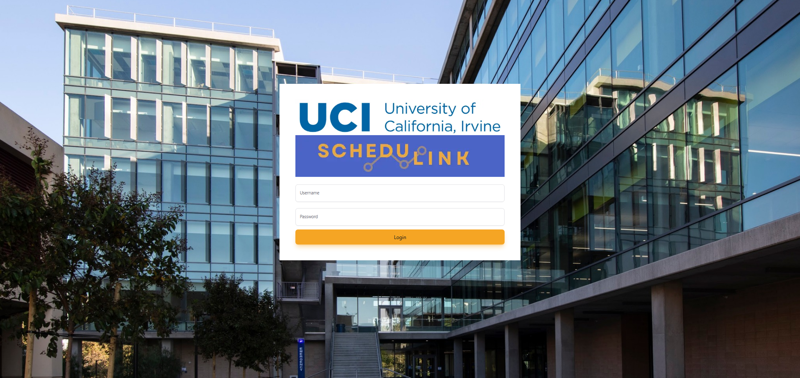
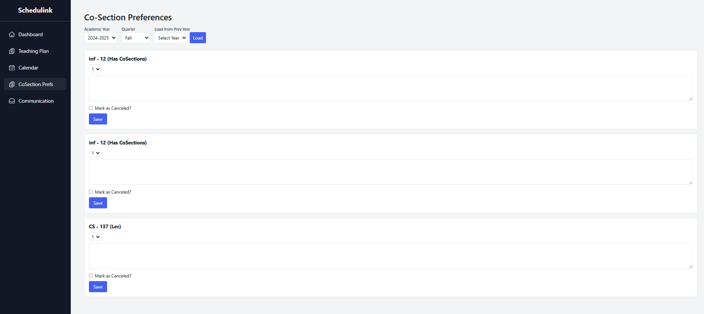
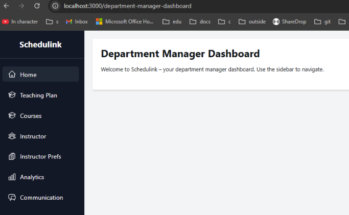

ICS Scheduler
A full-stack course scheduling platform built for UC Irvine's ICS department. Faculty and staff can manage course sections, classroom assignments, and weekly schedules through an interactive calendar interface with drag-and-drop functionality, role-based permissions, and real-time conflict detection.
The Problem
The ICS department needed a modern scheduling tool to replace manual spreadsheet-based processes. Faculty needed to view available time slots, request rooms, and coordinate across multiple courses — all while avoiding conflicts and respecting room capacities.
My Role & Contributions
Requirements & Design
- Collaborated with two sponsor stakeholders to produce detailed requirements
- Prototyped calendar interactions in Figma
- Designed the data model for courses, users, classrooms, and modules
Development
- Built RESTful Node.js/Express APIs backed by MongoDB Atlas
- Implemented role-based access control (admin, faculty, viewer)
- Developed the Next.js front-end with TypeScript
- Integrated a messaging system for schedule coordination
Tech Stack
Next.js
TypeScript
Node.js
Express
MongoDB Atlas
Figma
Screenshots





Challenges & Solutions
- Conflict detection: Overlapping time slots for the same room needed real-time validation. I implemented server-side constraint checking on every schedule mutation.
- Stakeholder alignment: Requirements evolved over the 22-week timeline. Regular Figma prototype reviews kept everyone aligned before code was written.
- Data modeling: The relationship between courses, sections, time slots, and rooms required a flexible schema. MongoDB's document model handled the nested relationships well.
Outcomes
- Delivered a functional prototype within the 22-week academic timeline.
- Stakeholders validated the core calendar workflow through interactive demos.
- Gained hands-on experience with real-world requirements gathering and iterative design.
Lessons Learned
- Prototyping in Figma before coding saved significant rework — stakeholders could react to visual designs faster than written specs.
- Role-based access control should be designed from the start, not bolted on later.
- Calendar UIs have deceptively complex edge cases (DST, multi-day events, recurring patterns).